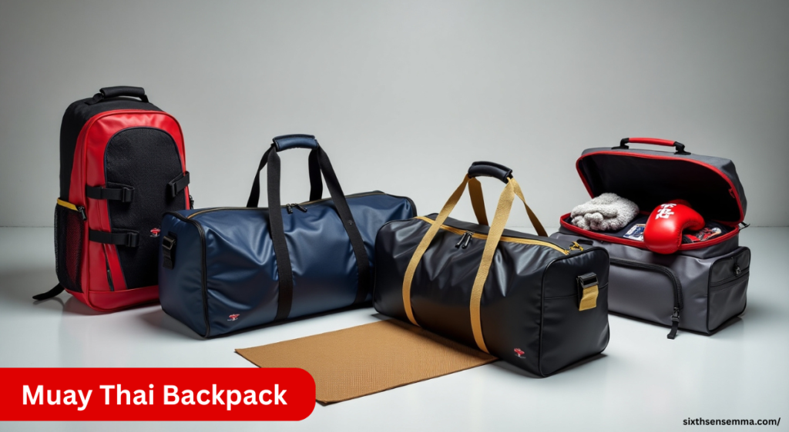
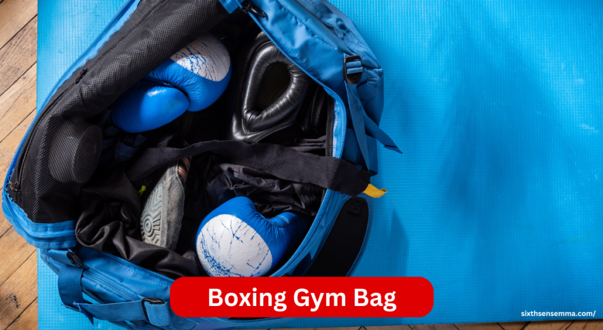
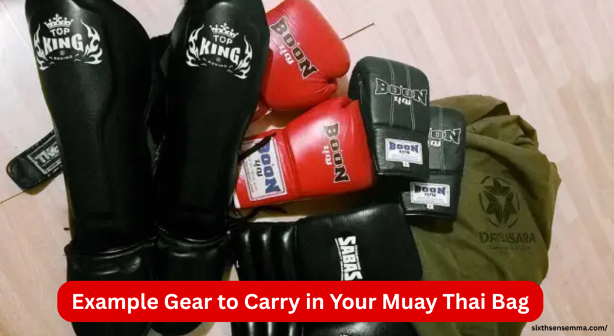

Types of Muay Thai Backpack & How to Choose the Best One for Your Gear

Muay Thai Backpacks are a must-have for every fighter who wants to keep their gear clean, organized, and ready for action. Designed for the special needs of Muay Thai training, these bags offer smart features like airflow, separate space for gloves, shin guards, and sweaty equipment. Unlike regular gym bags, they’re made to handle the practice, fight, and traveling routines of real fighters. This guide helps you look at different types, learn what’s important, and choose the right backpack to carry everything you need to the gym, safely and with ease.
Why Use a Muay Thai Backpack?
A good Muay Thai backpack truly helps you stay ready for training and unexpected fights. It’s not just about tossing in your gloves and shin guards you need a bag that protects your equipment, keeps your clothes clean, and offers special compartments to stay organized. I’ve found it much easier to carry all my gear when it’s in one reliable bag. The right backpack makes everything feel simple just pack, bring it along, and you’re set. Whether you’re headed to class or a fight night, it keeps things together so nothing slows you down.
Organization
A proper Muay Thai backpack keeps your training gear and everyday items from getting mixed up. With dedicated spots for wraps, gloves, and shorts, it becomes easy to find your stuff when you need it. I always make sure everything is neatly arranged, which really prevents last-minute chaos. Whether it’s Muay Thai essentials or daily carry, good organization means you’re always ready.
Portability
When you’re traveling to a camp, driving to the gym, or just walking with your Muay Thai gear, a well-made backpack makes carrying your equipment far more comfortable. It’s designed to be secure and easy to carry, reducing the hassle of moving bulky gear. Personally, I’ve felt how much easier it gets when your bag fits well and supports your back—nothing beats a well-made bag for smooth mobility.
Specific Needs for Muay Thai Gear
Muay Thai gear comes with unique needs, especially after a tough training session. A specialized backpack offers proper ventilation to keep sweaty gloves, shin guards, and wet gear from stinking up your bag. I always look for smart compartments that keep dry gear and bulky items separate. This separation keeps everything fresh and ready for the next round.
Types of Muay Thai Backpacks & Gym Bags
- Muay Thai Backpacks
- Boxing Gym Bag
- Muay Thai Gym Bag
- Boxing Equipment Bags
Muay Thai Backpacks
There are several types of Muay Thai backpacks designed to match different training needs and lifestyles. The classic training backpack is simple and reliable, perfect for carrying essential gear. A mesh ventilated backpack helps keep sweaty items fresh by allowing airflow. The duffel-backpack hybrid offers a mix of space and comfort, giving you the flexibility to carry it how you like.
For those who need extra durability and organization, the tactical style backpack includes multiple compartments and is built tough. If you’re often in wet environments, a waterproof rugged backpack will protect your gear completely.
| Type | Carries | Best For |
|---|---|---|
| Classic Training Backpack | Gloves, wraps, towel, water bottle, mouthguard | Beginners or casual Muay Thai students |
| Mesh Ventilated Backpack | Wet gloves, shin guards, sweaty clothes | Fighters training daily or in hot climates |
| Duffel-Backpack Hybrid | Full gear (gloves, shin guards, clothes, shoes) | Committed fighters or athletes with long training sessions |
| Waterproof Rugged Backpack | Gear + outdoor items | Outdoor trainers, rainy region fighters |
| Tactical Backpack | Well-organized gear, personal items | Military-style fitness enthusiasts or those who prefer rugged gear |
| Minimal Compact Backpack | Wraps, gloves, water bottle only | People going for light pad sessions or warm-ups |
Boxing Gym Bag
There are several Muay Thai backpack alternatives and gym bag styles to consider based on your routine and preferences. The standard duffel is a go-to option for many, offering ample space and simplicity. A wheeled gym bag adds convenience, especially if you’re carrying heavy gear over longer distances.

The backpack style gym bag blends comfort and functionality, ideal for hands-free travel. For lighter sessions, a drawstring sack works well to carry just the basics. The convertible duffel/backpack gives you both styles in one, offering flexibility for changing needs. These styles are best suited for general gym-goers, cross-trainers, and athletes who need reliable and versatile carrying solutions.
| Type | Carries | Best For |
|---|---|---|
| Standard Duffel Bag | Full gear set + clothes | General boxing trainees, gym-goers |
| Backpack Style Gym Bag | Gloves, wraps, towel, water | Urban commuters, students, cyclists |
| Wheeled Gym Bag | All boxing gear + extras | Trainers, coaches, or people with heavy gear |
| Drawstring Sack | Wraps, gloves, mouthguard | Kids, light users, quick training |
| Ventilated Duffel | Odor-prone gear | Athletes with multiple weekly sessions |
| Convertible Bag | Gear + daily use items | Those who move from work/school to gym directly |
Muay Thai Gym Bag
For serious athletes, especially competitive fighters or those in daily training, choosing the right Muay Thai backpack or gym bag is essential. A large gear bag provides plenty of space for all your equipment, including bulky items like pads and shin guards. The ventilated duffel helps maintain hygiene by reducing moisture and odors after intense sessions.
A waterproof gym bag is ideal for rainy days or storing wet gear safely. If you like staying highly organized, the multi-compartment gym bag keeps items separated and easy to find. Lastly, a travel-friendly fight bag is compact enough for commutes yet spacious enough for your daily needs, making it perfect for fighters on the go.
| Type | Carries | Best For |
|---|---|---|
| Large Gear Bag | Gloves, shin guards, elbow pads, shorts | Professional or competitive Muay Thai fighters |
| Ventilated Duffel | Odor-sensitive gear | Fighters who train multiple times per week |
| Waterproof Bag | Full gear + valuables | Beachside or rainy environment trainees |
| Travel-Ready Bag | Gear + travel essentials | Fighters traveling for fights or camps |
| Multi-Compartment Bag | Clean/dirty gear separated | Organized fighters, women’s Muay Thai classes, hygienic use |
Boxing Equipment Bags
When your gear demands specialized storage, especially for sparring gear, or if you’re a coach or hybrid athlete, selecting the right Muay Thai backpack or bag type matters. A glove pouch is compact and perfect for protecting just your gloves. For those needing to carry everything in one go, the all-gear bag handles it all—from pads to shin guards.
A protective shell case adds extra security for fragile gear like headgear or valuables. The locker-ready hook bag is ideal for quick access and tight gym spaces, hanging easily inside lockers. Lastly, the multi-sport duffel suits athletes who train across disciplines, providing adaptable storage for various gear types.
| Type | Carries | Best For |
|---|---|---|
| Glove-Only Bag | 1 pair of gloves | Beginners, kids, cardio boxing users |
| All-Gear Equipment Bag | Gloves, wraps, pads, towel | Amateur boxers, daily gym users |
| Protective Shell Bag | Gloves + fragile gear | Travelers or people carrying expensive gloves |
| Locker Hook Bag | All training items + locker hanger | Gym boxers, people training during lunch breaks |
| Multi-Sport Duffel | Gloves, shoes, fitness gear | Cross-trainers, hybrid athletes (boxing + strength training) |
Features to Look For in a Muay Thai Backpack
A solid Muay Thai backpack should be strong enough to handle daily use and lasts long through intense training routines. Look for separate compartments to store small items and protect gear without everything getting jumbled together. I prefer bags that are comfortable to carry and offer easy-to-reach pockets for quick access during class. Water resistance is a must to keep your gear dry, and there should always be enough space to fit everything—from gloves to clothes—without cramming.
Durability
A durable bag is key when your backpack goes through rough handling, constant travel, and countless training sessions. I’ve had cheap ones fall apart, but the good ones use tough materials, strong stitching, and heavy-duty zippers to avoid tearing or breaking. A reliable Muay Thai backpack should easily handle weight and lasts through everything you throw at it—literally.
Capacity
A Muay Thai backpack with good capacity makes carrying all your essential gear much easier. From gloves and shin guards to clothes and other bulky equipment, the bag should offer enough space while still feeling compact and easy to manage. Personally, I never settle for anything less—it has to fit everything without stuffing or straining the zippers.
Compartments
The best Muay Thai backpacks offer multiple compartments to keep things organized and clean. I always look for separate sections with airflow to store sweaty equipment and dirty gear, which really helps prevent odors and buildup. Ventilated sections are great for mouthguards and clean gear, while small pockets inside hold keys and other smaller items without hassle.
Comfort
For daily training and long commutes, a comfortable Muay Thai backpack is a must. I’ve had bags that caused real discomfort on long walks, so now I only go for ones with padded shoulder straps and a breathable back panel. These comfort features really reduce strain on your back and shoulders, letting you focus more on training and less on carrying stress. A good fit and adjustable design make all the difference.
Water Resistance
A water-resistant Muay Thai backpack is essential when you train in unpredictable weather. I’ve been caught in the rain more than once, and having this feature kept my gloves, gear, and clothes safe and dry. Whether it’s accidental spills or outdoor sessions, a waterproof lining protects your stuff and keeps it fresh and ready for the next round.
External Pockets
External pockets are super handy when you need quick access to small essentials like your phone, wallet, or mouthguard. I always keep these in easy-to-reach spots so I don’t have to open the whole bag just to grab something small. It keeps my routine smoother and my gear more organized.
Example Gear to Carry in Your Muay Thai Bag
Packing your Muay Thai bag right means knowing what’s needed and what’s optional gear. I always start with essential items like gloves, shin guards, mouthguard, and ankle supports—those are non-negotiable. I also keep a water bottle, training shorts, and a towel to stay fresh. Depending on the session, I might add headgear or focus mitts if space allows. Everything should fit just right, with nothing extra added that weighs you down.

Muay Thai Gloves
Gloves are the most essential item in any Muay Thai training bag. I usually carry two pairs—one for pad work and one for sparring—depending on the session. It’s important to protecting your hands and your opponent, so having the right pair matters. Choose based on your needs and preferences, and make sure your bag has enough space to store more than one pair comfortably.
Shin Guards
Shin guards are necessary for protecting your legs during hard kicks and blocks. Since they’re bulky, your backpack should have enough room and compartments to keep them secure and separate from other gear. A good setup helps them stay in place and prevents wear on the rest of your equipment. Personally, I always double-check they’re stored right to shield properly during training.
Headgear
When it comes to sparring, headgear is key for protection against cuts and bruises. Since it’s a bit bulky, your bag should have extra space or a dedicated section to keep it safe and intact. I never skip this—it really helps reduce risk and keeps your training safer in the long run.
Mouthguar
Your mouthguard is a small but extremely important piece of gear. It protects your teeth and jaw during contact, so keeping it in a safe storage spot is a must. I always use small compartments or external pockets on my backpacks for easy access. Since it’s small, you don’t want it lost among your gear—stay organized and ready.
Training Shorts
Training shorts are essential for any Muay Thai training session, and I always go for lightweight, flexible, and comfortable shorts. To keep fresh, they should be stored separately from sweaty gear or dirty gear. They’re usually space-saving, so even in a full bag, there’s always room if you pack them smartly.
Water Bottle
During intense workouts, staying hydrated is non-negotiable. I always pack my water bottle in the side pockets or holders of my Muay Thai backpacks for easy access. It lets me quickly grab a drink between rounds without digging through the whole bag—simple, smart, and effective.
Towel
A towel is an essential item I always pack to manage sweat during training and freshen up after training. I prefer a lightweight one that fits easily into an accessible pocket, making it easy to quickly wipe down. It helps me stay dry and comfortable throughout the session.
Optional: Focus Mitts, Ankle Supports, Supplements
Depending on your training routine, you might want to carry focus mitts for pad work or ankle supports for extra protection. I include these extras when needed and make sure my bag has flexible storage to fit them in. Sometimes, I also pack supplements to help with recovery after tough sessions—optional, but helpful.
Which Bag is Best for You? (User Guide)
| User Type | Recommended Bag Type |
|---|---|
| Beginner | Classic Muay Thai Backpack, Drawstring Sack |
| Daily Gym-Goer | Duffel-Backpack Hybrid, Ventilated Duffel |
| Commuter | Backpack-Style Gym Bag, Water-Resistant Model |
| Competitive Fighter | Large Multi-Compartment Muay Thai Gym Bag |
| Coach or Trainer | Wheeled Equipment Bag, Large All-Gear Bag |
| Casual Boxer | Compact Pouch, Small Duffel |
Other Considerations Before Buying
Before making a purchase decision, it’s smart to think about your budget and find a good balance between quality and what you’re spending. I always check reviews from other buyers to see if a bag meets real expectations and offers true value for money. Also, consider your personal style and stick with trusted brands that consistently deliver.
Brand Reputation
When choosing a backpack, I always invest in trusted brands like Fairtex, Venum, Hayabusa, or Elite Sports. These well-known brands offer better quality, smart design, and durable materials. They’re often tailored to Muay Thai athletes’ needs, which means your bag will last longer and serve your purpose effectively.
Personal Preference
When picking a backpack, your preferences matter just as much as function. I prefer a compact, sleek bag that feels good while carrying. A smart design with the right comfort features makes training more enjoyable. Choose one that fits your style, color, and how you want to feel during sessions—whether bold or simple, it should truly match you.
Contact Sixth Sense MMA – We’re Here to Help
Have questions or need help choosing the right Muay Thai backpack? Reach out to us anytime! Visit sixthsensemma.com for support, product info, or order updates.
Customer Reviews
Fairtex Backpack (AB1) – Best for Daily Training
Fairtex’s AB1 backpack is a solid choice for regular Muay Thai practitioners. It offers separate compartments for gloves, shin guards, and wet clothes. The mesh panels allow ventilation, keeping your gear fresh. I use this bag for daily training and love how it fits everything without feeling bulky. It’s durable, spacious, and comfortable to carry.
Venum Challenger Pro Evo – Great for Gym & Work
The Venum Challenger Pro Evo is a stylish and functional bag perfect for those who train after work or school. With padded laptop space, glove storage, and water bottle pockets, it handles both Muay Thai gear and everyday items. I like how the sleek design still holds all my gear without mixing clean and dirty items. It’s a great all-in-one option.
Hayabusa Ryoko Duffel-Backpack – Ideal Hybrid Gear Bag
This hybrid bag from Hayabusa works as both a duffel and a backpack, making it super flexible. It has a large capacity and internal dividers for organizing gear, along with ventilated sections for sweaty items. I’ve used it during travel and long gym days—it holds up well and feels balanced on the shoulders. Great for serious fighters on the move.
Why Choose Sixth Sense MMA?
At sixth sense mma, we care about quality, comfort, and your training needs. Our Muay Thai gear, including top-rated backpacks, is made to last and built for fighters. We offer trusted products, quick support, and fast shipping because you deserve the best every time you train.
Budget vs. Quality
| Aspect | Budget Backpack | Quality Backpack |
|---|---|---|
| Initial Cost | Low | Higher |
| Durability | Less durable, may wear out quickly | Built to last with strong stitching and materials |
| Features | Basic compartments, limited ventilation | Extra pockets, ventilation, waterproofing, padding |
| Comfort | Standard straps, less ergonomic | Padded straps, back support, breathable mesh |
| Long-Term Value | May need replacement often | Saves money in the long run |
| Ideal For | Beginners, short-term use | Regular training, long-term use |
Conclusion
A good MMA backpack makes your training easier and more organized. It keeps your gear safe, dry, and in one place. Choosing the right backpack based on your training style and gear needs helps you stay ready for every session. Train smart and stay prepared!The right MMA backpack is more than just a bag it’s an essential part of your training gear. It keeps your gloves, wraps, rash guards, shoes, and water bottle in one place, protecting them from damage and odor. Ventilated compartments help prevent bacteria build-up. Padded laptop sleeves, water-resistant material, and dedicated gear pockets offer the durability and functionality every fighter needs. Whether you train daily or travel for competition, a quality backpack improves your efficiency, comfort, and confidence.
FAQ’s
A Muay Thai backpack is specifically designed for fighters. It includes features like ventilation for sweaty gear, compartments for gloves and shin guards, and durable materials that withstand frequent training and travel—features regular gym bags usually lack.
The size depends on your training routine. If you’re a beginner or only carrying gloves and wraps, a compact or classic backpack is fine. For daily fighters or those carrying shin guards, towels, and extra gear, a larger duffel-backpack hybrid or multi-compartment bag is best.
Muay Thai backpacks are worn on your back, ideal for portability and comfort. Gym bags (often duffels) may offer more space and easier access but are bulkier. Some hybrid models combine both features for flexibility.
Very important. Ventilated compartments prevent odor and bacteria build-up by allowing airflow to your sweaty gear like gloves and shin guards. This keeps your gear fresh and increases its lifespan.
Essentials include gloves, shin guards, hand wraps, mouthguard, water bottle, towel, training shorts, and optionally headgear, ankle supports, and supplements. Pack based on your session type and training frequency.
Yes. Waterproof backpacks protect your gear from rain, spills, and wet gym floors. They’re especially helpful if you commute in unpredictable weather or train outdoors.
Competitive fighters should choose large gear bags or multi-compartment backpacks with ventilation, enough space for sparring gear, and smart organization for clean/dirty gear separation.
Tactical backpacks are rugged, military-style bags built for durability. They offer advanced organization with multiple pockets, and are ideal for people who prefer a structured, tough bag for long-term use.
Train with us in Coppell
The first class is free. Shorts, a t-shirt and a water bottle. We lend the rest.
Book a free class